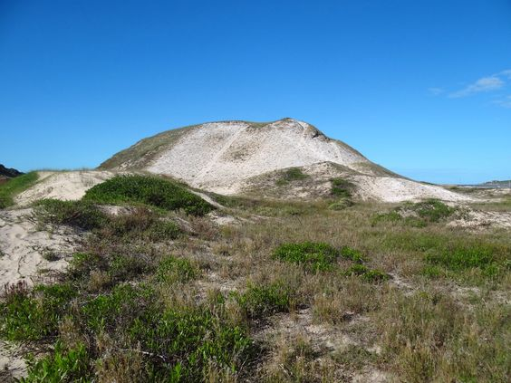

O que são os Sambaquis?
Sambaquis são montes ou montículos artificiais formados por acumulação de conchas e outros materiais orgânicos e inorgânicos ao longo do tempo, principalmente em regiões litorâneas. Esses montes são encontrados em diversas partes do mundo, mas são mais comuns na costa do Brasil.
Os sambaquis são considerados sítios arqueológicos de grande importância, pois fornecem informações valiosas sobre as antigas populações humanas que habitavam essas áreas. Eles são compostos principalmente por conchas de moluscos, mas também podem conter restos de animais marinhos, ferramentas de pedra, ossos humanos e artefatos cerâmicos.
Esses montes se formaram ao longo de milhares de anos, resultado do descarte contínuo de resíduos alimentares pelas comunidades pré-históricas que viviam nas proximidades das praias e estuários. Com o tempo, esses resíduos foram se acumulando e formando os sambaquis.
Os sambaquis têm grande importância para o estudo da pré-história e arqueologia no Brasil, pois permitem a análise dos padrões de subsistência, organização social e tecnologia das populações que viveram nessas áreas. Além disso, eles também são importantes para a compreensão das mudanças climáticas e da evolução do nível do mar ao longo do tempo, uma vez que sua formação está relacionada a esses fatores.
Devido à sua importância cultural e científica, os sambaquis são protegidos por legislações específicas e devem ser preservados e estudados de forma adequada.
Sambaqui
.jpg)
.jpg)